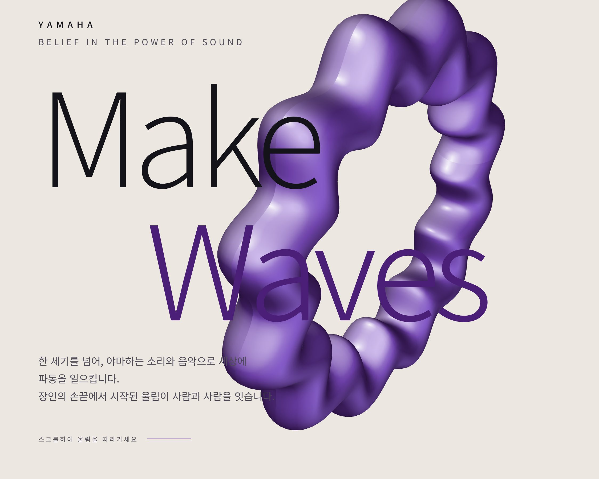
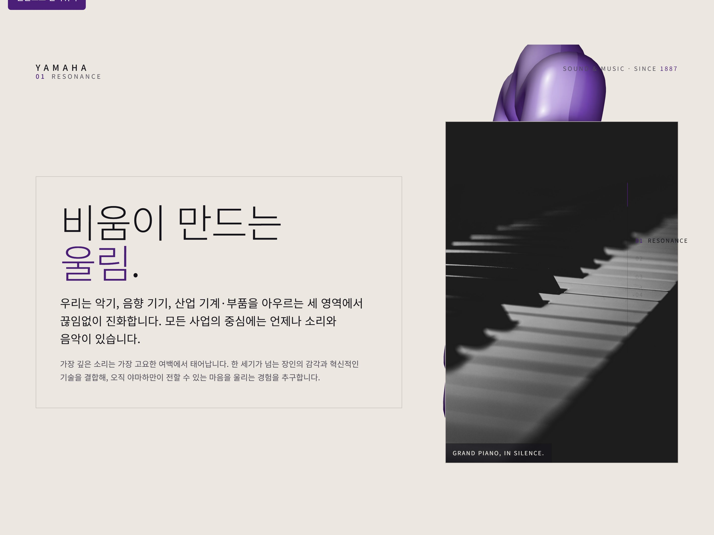
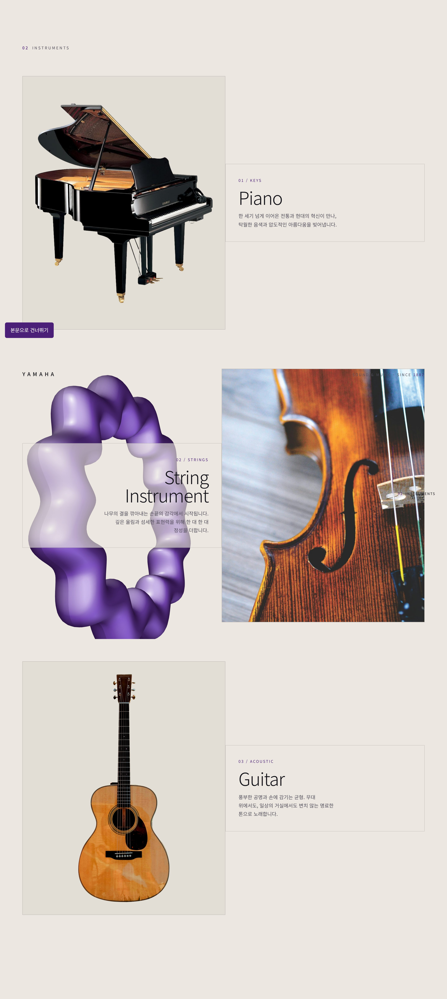
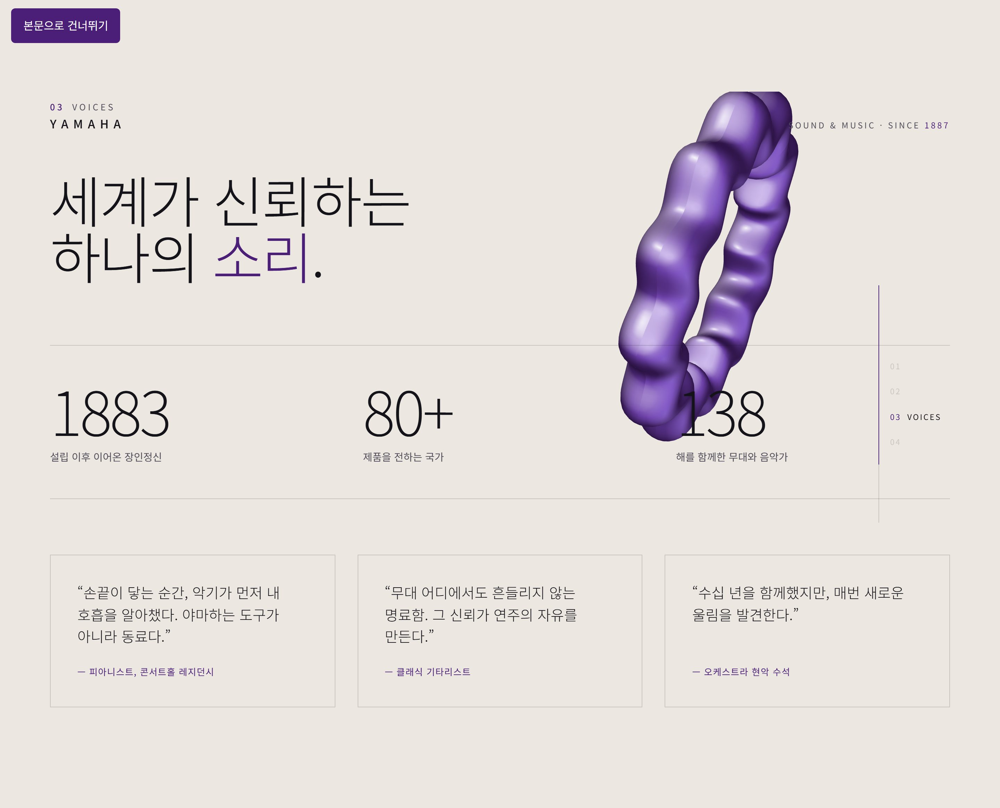
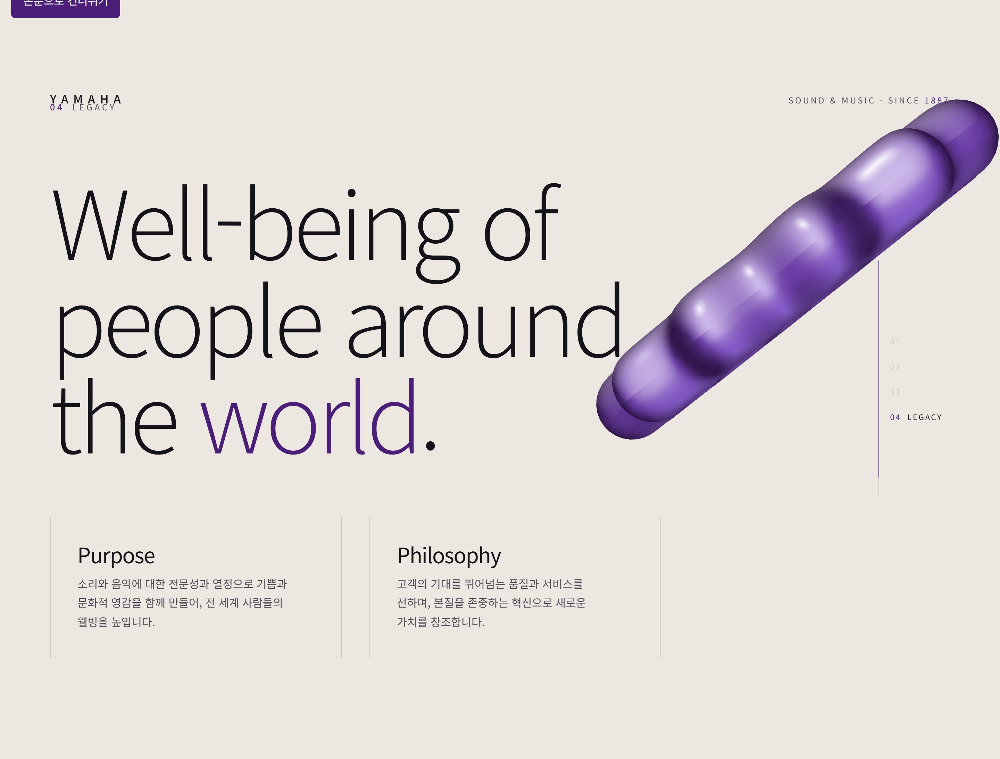
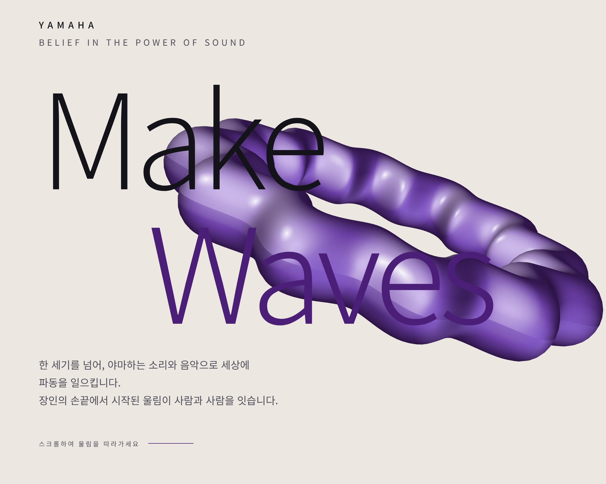
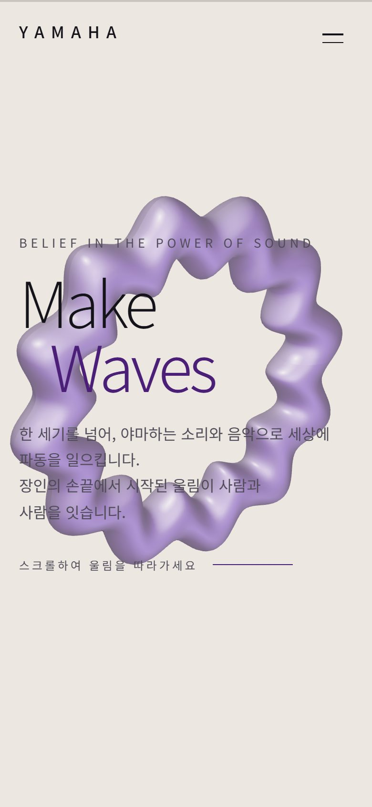

소리로 세상에 파동을MAKE WAVES
1887년 창립, 악기부터 산업기계까지 아우르지만 모든 사업의 중심은 '소리와 음악'. '종합 기업 포털'처럼 흩어져 있던 yamaha.com을 Make Waves — 소리 브랜드 4막 서사로 재해석한 리디자인의 UX 사고 과정을 12단계로 기록한다.
브랜드와 사용자를 먼저 이해한다
브랜드 목적
1887년 창립한 야마하는 악기·음향기기·산업기계/부품을 아우르지만, 모든 사업의 중심은 소리와 음악이다. 슬로건 Make Waves — 소리로 세상에 파동(영향)을 일으킨다는 정체성이 핵심이다.
핵심 가치
한 세기 넘는 장인정신 · 소리에 대한 전문성 · 사람과 사람을 잇는 음악 · 전 세계인의 웰빙. 스펙이 아니라 '소리를 대하는 태도'로 설득해야 하는 브랜드다.
주요 사용자 (3층위)
- 연주자·음악 애호가 — 악기 라인업과 브랜드 철학에 감정적으로 공감하려는 사람
- 브랜드 탐색층 — '야마하는 어떤 회사인가'를 이해하려는 일반·잠재 고객
- 채용담당자·동료 — 3D·모션 구현력과 브랜드 재해석 역량을 평가
기존 사이트를 진단한다
2026-07-05 실제 yamaha.com(글로벌 공식)을 직접 접속해 내비·IA·콘텐츠·톤을 실측한 결과. 접근성·모바일 렌더 세부는 이번 실측 범위 밖이라 추정하지 않는다.
- 정보구조(IA)
- 최상위 내비가 Products & Services · Philosophy & Vision · About Us · Technology & Design · Stories · Sustainability · Investor Relations · Recruitment · Newsroom의 9개 병렬 — IR·채용·뉴스룸까지 아우르는 '종합 기업 포털'이라 '소리 브랜드'라는 감성 정체성이 여러 기업 기능 사이에 흩어진다.
- 홈 구성
- 히어로가 3개 슬라이드(NEVER STOP EXPLORING · LIVE FOR MUSIC · COMPOSE A BEAUTIFUL FUTURE)로 시작하고, 이어 News → Topics(6카드) → WHO WE ARE → MORE ABOUT YAMAHA의 '뉴스·토픽 허브' 리듬으로 이어진다.
- 브랜드 메시지
- 'Make Waves'와 "Well-Being of People around the World"가 실제로 노출된다(강점). 다만 스토리텔링이 뉴스·토픽·IR·채용 등 기업 콘텐츠와 병렬이라, '소리를 대하는 태도'가 하나의 몰입 서사로 응집되지 못하고 코퍼레이트 허브에 분산된다.
- 시각 톤
- 큰 슬라이더·카드 썸네일 중심, 개별 제품 사진 최소화, 낮은 텍스트 밀도, 3열 카드 그리드. 톤은 정돈돼 있으나(강점) '파동·울림'을 체감시킬 인터랙션 장치는 관측되지 않는다.
- 인터랙션
- 슬라이더·카드 캐러셀 위주의 정적 구성. 핵심 은유
wave(파동)를 움직임으로 구현한 장치는 없다. - 접근성·모바일
- 렌더 DOM·모바일 전환 세부는 이번 실측에서 확인하지 않았다(추정 배제). 별도 실측을 권장한다. (관측 한계)
무엇이, 왜 문제인가
- P1
방대한 사업군에 정체성이 희석되어 '소리 브랜드'라는 핵심 메시지가 흐려진다. ← 사업 다각화를 IA에 그대로 반영해 '소리'라는 상위 개념으로 통합하지 못함
- P2
제품이 균질 그리드로 나열되어 각 악기의 감성적 차이가 위계로 전달되지 않는다. ← 제품을 카탈로그 단위로 다루고 악기별 서사·감성 위계를 설계하지 않음
- P3
'파동·울림'이라는 브랜드 핵심 은유를 체감할 인터랙션 장치가 없다. ← 모션을 장식으로만 인식, 브랜드 은유(wave)를 관통하는 시각 장치가 부재
- P4
신뢰 근거(사회적 증거)가 흩어져 있어 '믿을 만한가'가 한 흐름으로 설득되지 않는다. ← 수치·인용·연혁이 각기 다른 페이지에 분산되어 신뢰가 누적되지 않음
- P5
긴 페이지에서 '내가 지금 어디쯤인가'의 탐색 지표가 약하다. ← 롱스크롤 단일 서사에 맞는 '진행 + 위치' 내비 패턴을 갖추지 않음
사용자는 "야마하가 소리를 대하는 태도와 대표 악기의 감성"을 느끼려 하지만, 방대한 사업군과 균질한 제품 나열 때문에 '소리 브랜드'라는 핵심 정체성에 도달하지 못한다.
디자인 목표
복잡한 사업군을 걷어내고 'Make Waves — 소리 브랜드' 하나의 정체성으로 집중시킨다. (→ P1)
'wave/울림'이라는 은유를 페이지 전체를 관통하는 시각 장치로 구현한다. (→ P3)
악기를 감성 위계가 있는 서사로 재편하고, 신뢰 근거를 한 흐름으로 누적시킨다. (→ P2·P4)
롱스크롤에 맞는 '진행 + 위치' 내비를 제공하되 3D 성능·접근성을 지킨다. (→ P5)
'철학→제품→신뢰→존재이유' 4막 서사로 재편
- Resonance철학
- Instruments제품
- Voices신뢰
- Legacy존재이유
- S1 정체성 집중 IA — Resonance(철학) → Instruments(제품) → Voices(신뢰) → Legacy(존재이유)의 4막 단일 서사로 재편, 산업기계 등 비핵심 사업은 서사에서 의도적으로 배제. (→ P1)
- S2 관통하는 은유 — 절차적 MatCap 크롬 '사운드 링'(Three.js)이 스크롤을 따라 떠다니며 페이지 전체의 '스파인(척추)' 역할 → 브랜드 은유(파동)를 상시 체감. (→ P3)
- S3 감성 위계형 제품 — Instruments를 좌/우 교차 배치(data-side)로 리듬을 주고, Piano/Strings/Guitar마다 '소리를 대하는 문장'을 부여해 감성 차이를 위계화. (→ P2)
- S4 신뢰의 누적 — Voices에서 카운트업 수치(1887 · 80+ · 138) + 연주자 인용을 한 섹션에 집약해 사회적 증거를 하나의 클라이맥스로 설계. (→ P4)
- S5 탐색 지표 — 우측 '주파수 눈금(ruler)' = 내비 + 진행 표시로 위치·진척을 동시에 제공. (→ P5)
- S6 접근성·성능 병행 — skip-link, 3D 캔버스 aria-hidden, 시맨틱 섹션, 이미지 대체텍스트로 몰입과 책임감을 함께.
전략을 화면으로 옮기다




'라이트 갤러리' 디자인 시스템
Palette
- paper#ECE8E1
- paper-2#E3DED5
- ink#15131A
- ink-soft#4F4B58
- violet#4B1E78
- violet-lit#7B46C4
Typography
Noto Sans KR 100 — 비움이 만드는 울림헤어라인 헤딩 · 고요함
Noto Sans KR 700 — Make Waves, 소리로 파동을굵은 헤딩 · 존재감
Motion
3D 사운드 링(스크롤을 관통하는 크롬 오브젝트) · 우측 ruler 진행 표시 · Voices 카운트업 · 섹션 리빌 —
극단적 라이트/헤어라인 웨이트로 '비움 = 울림'을 조형화했다. 모두 prefers-reduced-motion에서 축소하며,
ease는 cubic-bezier(0.22, 1, 0.36, 1) 하나로 통일해 리듬을 일관되게 유지한다.
완성된 화면


결함을 보강하다 컨셉 보존형 2차 개선
기대 효과
- 방대한 사업군이 걷힌 4막 서사로 '소리 브랜드' 정체성이 명확히 각인된다. (P1)
- 관통하는 사운드 링이 'Make Waves' 은유를 상시 체감시켜 브랜드 기억도를 높인다. (P3)
- 악기별 감성 위계로 제품이 '카탈로그'가 아닌 '이야기'로 읽혀 몰입이 상승한다. (P2)
- Voices의 수치·인용 집약으로 신뢰가 한 번에 누적되어 설득력이 강화된다. (P4)
- 우측 ruler로 롱스크롤에서도 위치·진척이 명확해 탐색 확신이 커진다. (P5)
회고
이 프로젝트에서 가장 어려웠던 건 방대한 사업군을 '무엇을 뺄까'로 접근한 지점이었다. 야마하는 악기부터 산업기계·IR·채용까지 아우르는 종합 기업이지만, 그 전부를 담으려 할수록 '소리 브랜드'라는 정체성은 흐려졌다. 그래서 산업기계 등 비핵심 사업을 서사에서 의도적으로 걷어내고 Resonance·Instruments·Voices·Legacy의 4막으로 집중시켰다. 더하는 것보다 덜어내는 결정이 더 무거웠다.
다음 고민은 3D 몰입과 성능·접근성의 균형이었다. 스크롤을 관통하는 사운드 링은 'wave' 은유를 물리적으로 체감시키는 핵심 자산이라
포기할 수 없었지만, 3D 캔버스는 접근성·성능과 자주 충돌했다. 캔버스를 aria-hidden으로 감추고 모든 신규 모션을
prefers-reduced-motion에서 축소하는 식으로 '몰입'과 '책임감' 사이를 조율했다.
남은 과제도 솔직히 남겨둔다. 모바일에서 사라지던 ruler는 드로어·상단 게이지로 보강했지만, 실제 SNS·문의 페이지는 아직 없어 죽은 링크를 placeholder로 처리했다. 3D 사운드 링의 60fps·모바일 발열은 브라우저 실측으로 계속 확인이 필요하다. 이 케이스 스터디는 그 과정을 감추지 않고 드러내는 기록이다.